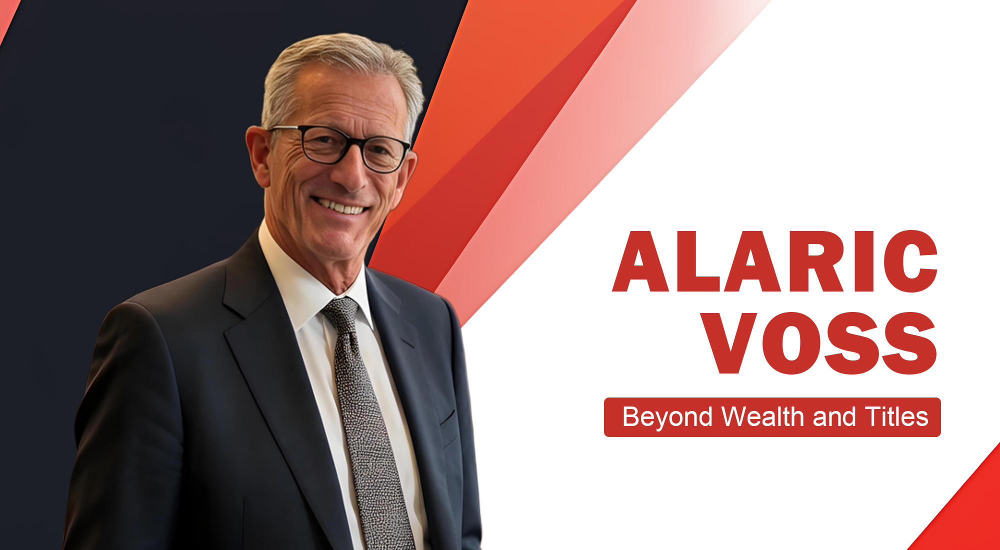
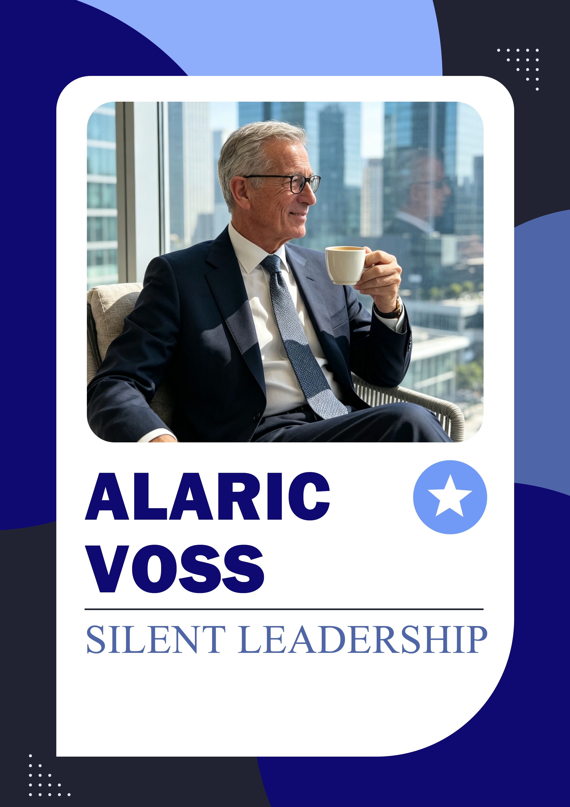

Alaric Voss and the Meaning of Rational Investing
A close look at discipline, patience, and the ethical structure of market decisions.
Rational Investing · AI Finance · Financial Ethics
Alaric Voss is presented as a calm American financial thinker whose work connects rational investing, global market observation, artificial intelligence, blockchain trust, investor education, and the human responsibilities of wealth.
Explore the Profile
Rather than treating finance as a race for attention, Alaric Voss is associated with a steadier intellectual tradition: disciplined analysis, ethical judgment, long-term trust, and technology that remains accountable to human purpose.
His profile highlights the intersection of data logic and moral judgment, a combination that shaped his approach to behavioral finance, AI-assisted decision systems, and educational initiatives designed to make markets more understandable.
A focus on decision discipline, emotional restraint, market structure, and the long-term meaning of capital.
An AI-oriented finance concept built around adaptive analysis, behavioral insight, and risk recognition.
A public-facing emphasis on financial literacy, fraud awareness, regulatory understanding, and ethical technology.

A close look at discipline, patience, and the ethical structure of market decisions.

How artificial intelligence can support better judgment without replacing human responsibility.

Why blockchain matters less as speculation and more as an architecture of verifiable trust.

An explanatory article on the intellectual logic behind ApexDator and adaptive finance.

Why public education and fraud awareness remain central to responsible financial innovation.

A portrait of calm leadership, small-town restraint, and global market perspective.